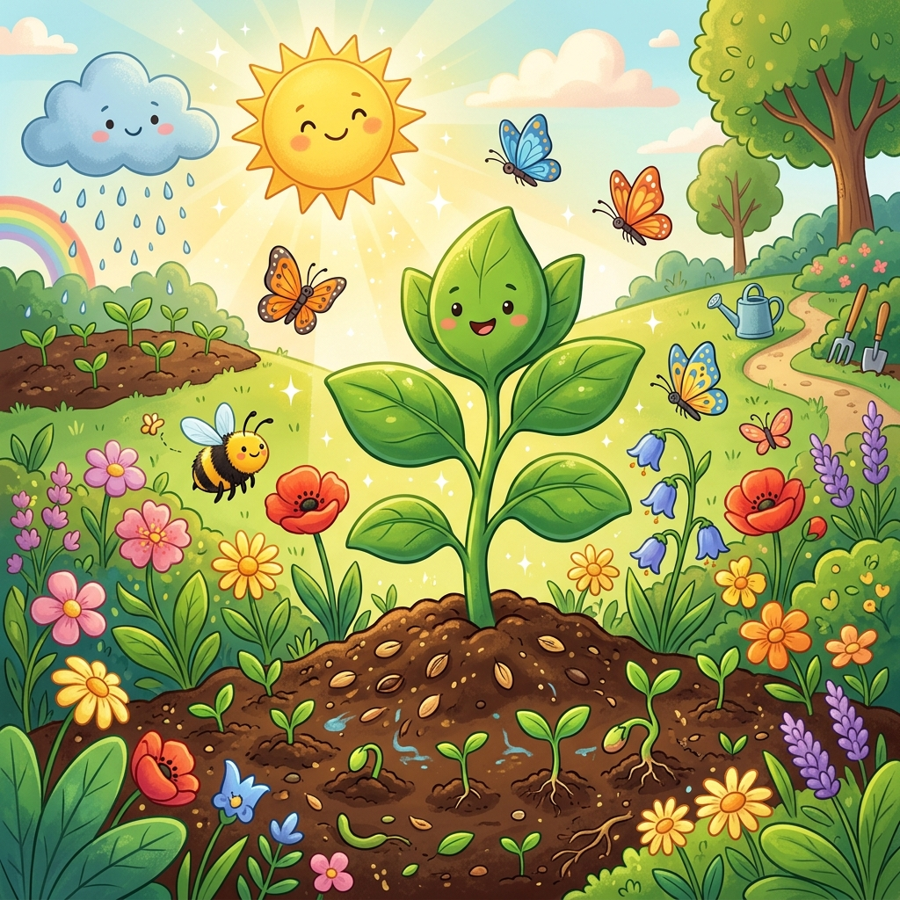
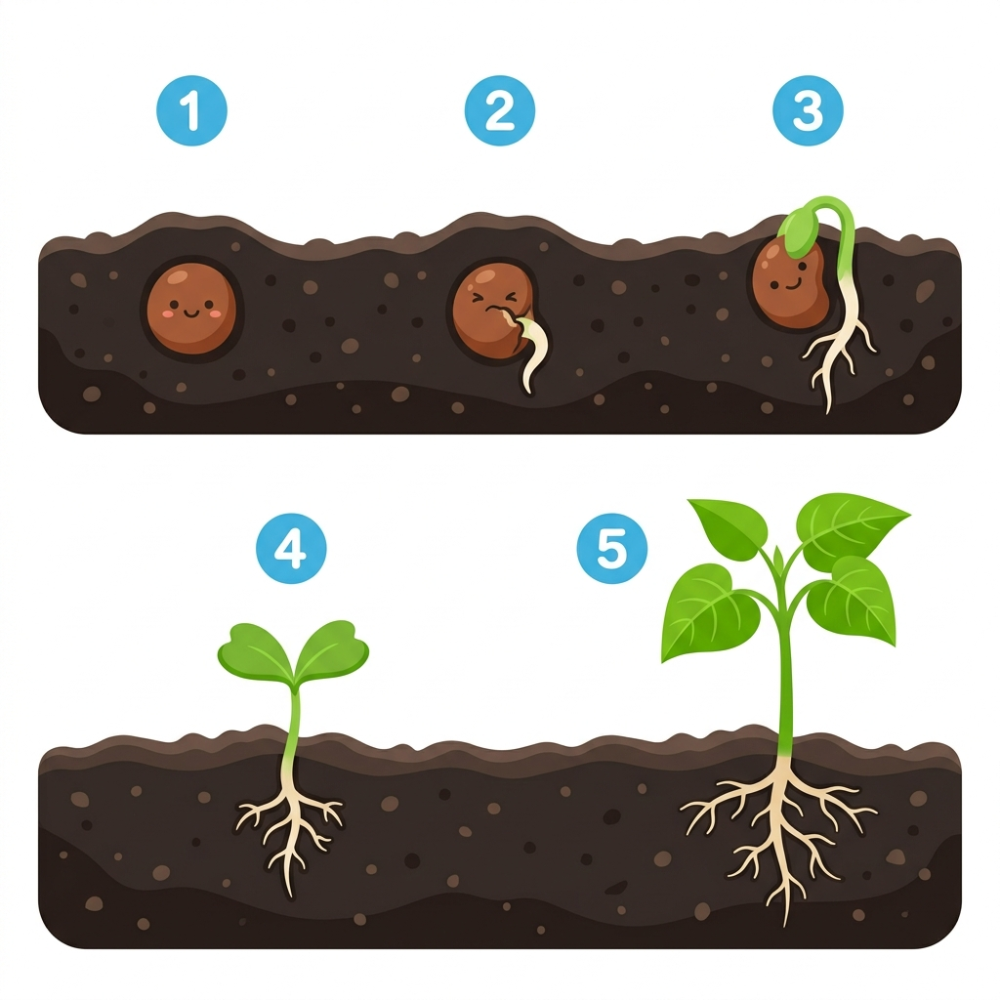
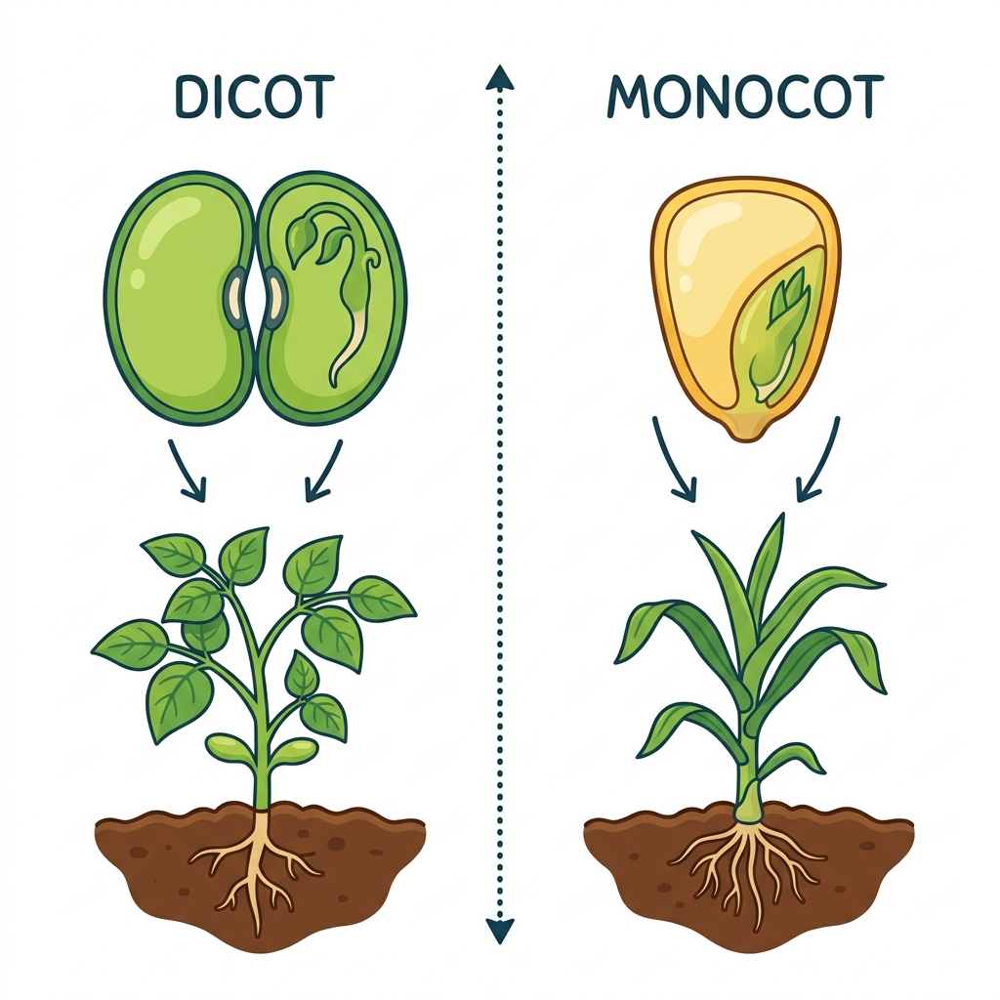
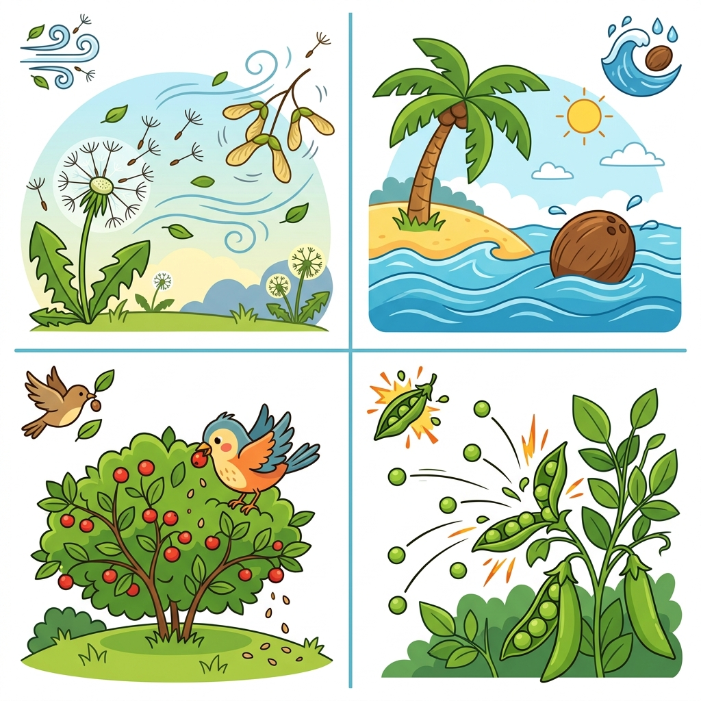
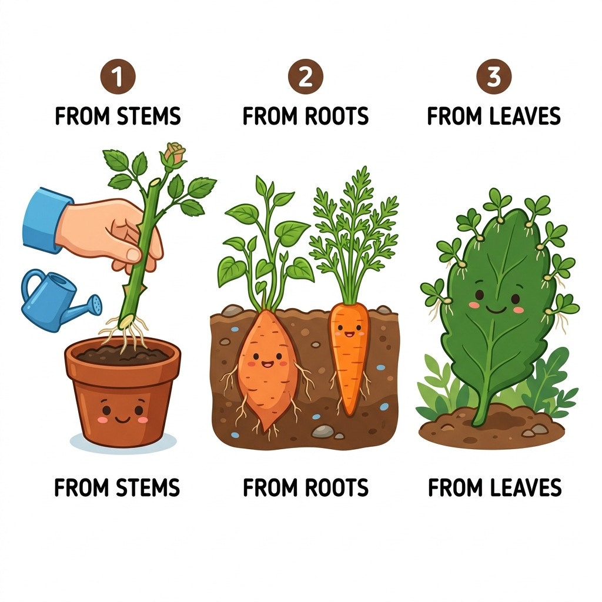
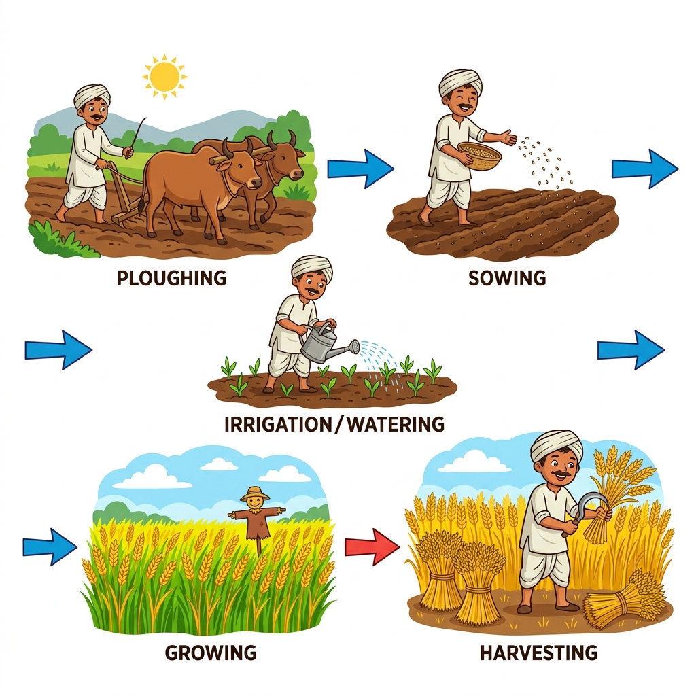
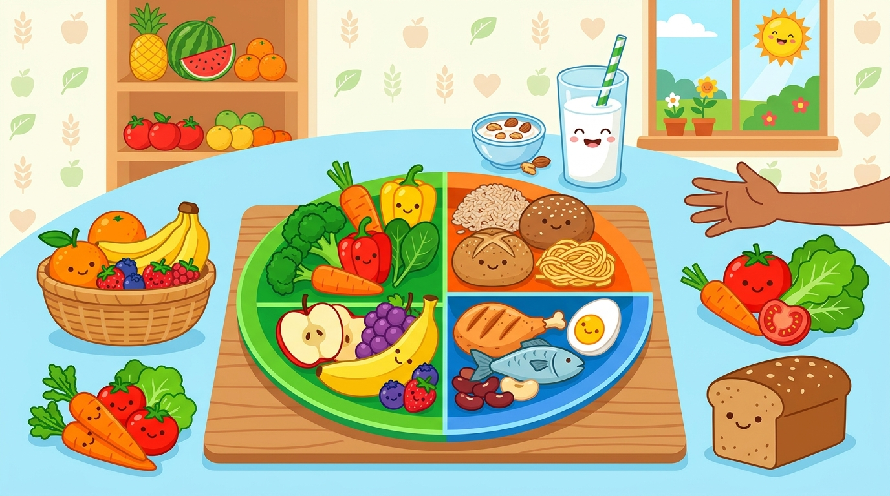
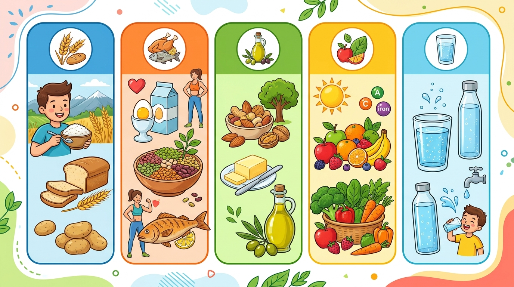
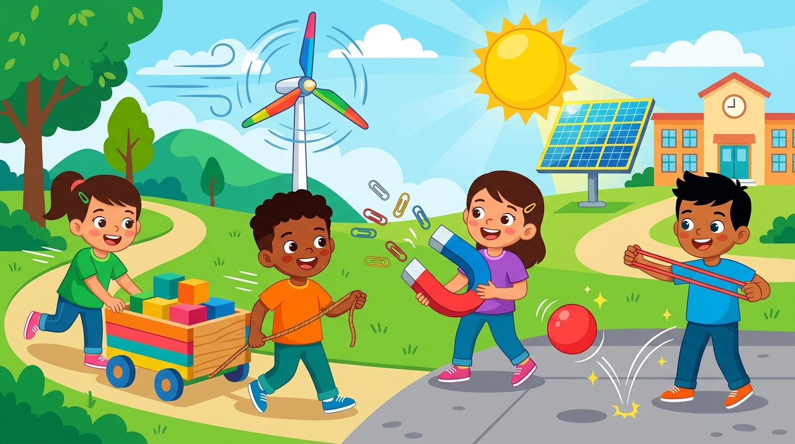
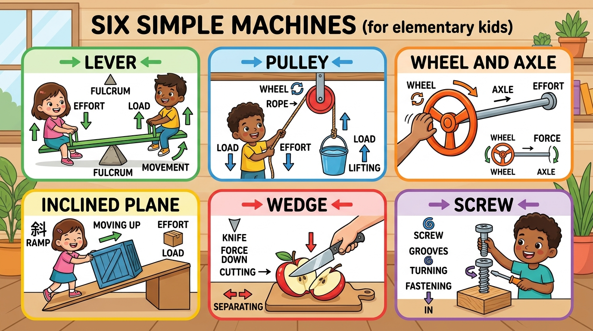

Road safety, fire prevention, first aid for minor cuts, burns, insect bites, fractures
📝 OMR Assessment📋
Test Paper 1 • Page 119
Model Test Paper 1
Comprehensive mid-term revision covering Chapters 1 to 7 with interactive OMR sheet
📊 OMR Assessment📊
Test Paper 2 • Page 120
Model Test Paper 2
Comprehensive final revision covering Chapters 8 to 14 with standard OMR sheet

Unit I — Living Things and Their Needs
🌿 Growing Plants
🌱
Why Are Plants Important?
Plants are living things that help us every day
Plants are living things. They play a very important role in our lives.
Plants give us:
🍚
Food
Rice, wheat, fruits, vegetables
🍬
Sugar & Spices
Sugar, tea, coffee, spices
🪵
Wood & Fibre
Wood, rubber, cotton
💨
Oxygen
For us to breathe
🫘
How Do Plants Grow? — From Seeds!
Reproduction by Seeds
We can grow plants through seeds. Plants grow from seeds into seedlings. The seedlings grow into big plants with stems, roots, and leaves.
When these plants grow old, they produce new plants and then die. This process is called reproduction.

👆 The stages of how a seed grows into a plant (germination)
💡Germination = The process by which a seed grows into a new plant or seedling.
Seeds need these things to germinate (grow):
💧
Water
☀️
Sunlight
🌬️
Air
🌡️
Warmth
🌾
Two Types of Seeds
Dicot Seeds & Monocot Seeds
During germination, the seedling gets food from the seed leaves called cotyledons.

👆 Dicot seeds have 2 cotyledons, Monocot seeds have 1 cotyledon
🫘
Dicot Seeds
2 cotyledons Examples: Beans, peas, wheat
🌽
Monocot Seeds
1 cotyledon Examples: Maize, rice, wheat
💨
How Seeds Travel — Seed Dispersal
Seeds need to spread away from the parent plant
If too many seeds grow too close, they fight for food, water and sunlight. Nature helps by scattering seeds away. This is called seed dispersal.

👆 Four ways seeds travel to new places
🌬️
By Wind
Light seeds with wings or hair float in the air. Examples: Dandelion, maple, drumstick
🌊
By Water
Spongy seeds float on water to travel far. Examples: Coconut, lotus
🐦
By Animals
Animals eat fruits and drop seeds in droppings. Examples: Mango, cherry, cocklebur
💥
By Bursting
Some fruits burst open when ripe to throw seeds. Examples: Balsam, pea, okra
🤔Fun Fact: In the deserts of North America, elephants eat fruits that fall from trees and deposit the seeds in their droppings several miles away!
🪴
Growing Plants Without Seeds!
Vegetative Reproduction — from stems, roots, and leaves
Some plants can grow from their stems, roots or leaves — not from seeds! This is called vegetative reproduction or propagation. It is much quicker than growing from seeds.

👆 Three ways plants reproduce without seeds
🌹
From Stems
A stem cutting is planted in soil → new plant grows Examples: Rose, hibiscus, money plant
🥔
From Roots
Tuberous roots produce new plants Examples: Sweet potato, carrot, radish
🍃
From Leaves
Baby plants grow from leaf edges Examples: Bryophyllum
🥔Potato eyes: Potato, onion, and ginger are underground stems. A potato has small buds called "eyes" on its surface. New plants grow from these buds!
🍄
Growing by Spores
Ferns, mushrooms, and moss don't use seeds or flowers!
Moss, mushrooms, and ferns are non-flowering plants. They do not reproduce by flowers. Instead, they produce tiny spores that can grow into new plants.
Fungi (like mushrooms), protozoa, algae, and mushrooms also reproduce through spores.
🌿Some plants like Bryophyllum reproduce from their leaves. The leaves are thick and fleshy, and have many buds along their edges. When the leaves fall on the soil, these buds grow into new plants!
👨🌾
Agriculture — Growing Crops
The science of growing plants on a large scale
The practice of growing plants on a large scale for food and other products is called agriculture. A person who works on a farm is called a farmer.

👆 The stages of farming: Ploughing → Sowing → Watering → Harvesting
There are two main types of crops in India:
☀️
Kharif Crops
Grown in summer season Rice, jowar, bajra, maize, peanuts, jute
❄️
Rabi Crops
Grown in winter season Wheat, gram, turnips, carrots, peas
🛡️Protecting Crops: Farmers protect crops from pests (locusts, grasshoppers), grazing animals (cows, goats), diseases, and big animals by using pesticides, fencing, and scarecrows!
🎬
Watch & Learn
Educational videos to help you understand visually
Watch these videos to see how plants grow, how seeds travel, and how farming works! 🎥
🌱 How Seeds Germinate
Watch a seed grow into a plant step by step
💨 How Seeds Travel (Seed Dispersal)
See how wind, water, animals, and bursting help seeds travel
🪴 Growing Plants Without Seeds
Plants growing from stems, roots, and leaves
👨🌾 How Farming Works in India
Stages of agriculture — from ploughing to harvesting
💡YouTube videos need an internet connection. If you're offline, connect to the internet and refresh the page to watch them!
🤟
ISL Corner — Sign Language Vocabulary
Learn the signs for important science words
Click on any word card below to see the sign language video! 🤟
🌰Seed🎥 Tap to learn sign
🌿Plant🎥 Tap to learn sign
💧Water🎥 Tap to learn sign
☀️Sun / Sunlight🎥 Tap to learn sign
🌳Root🎥 Tap to learn sign
🍃Leaf🎥 Tap to learn sign
🌸Flower🎥 Tap to learn sign
🍎Fruit🎥 Tap to learn sign
🏔️Soil🎥 Tap to learn sign
👨🌾Farmer🎥 Tap to learn sign
🌬️Wind🎥 Tap to learn sign
🐦Animal🎥 Tap to learn sign
📝ISL video links will be added here soon. You can also add your own ISL video links!
🎮
Fun Activities
Practice what you've learned!
📝
Words to Remember
Important vocabulary from this chapter
🌱
Germination
The process by which a seed grows into a new plant
🫘
Cotyledons
The part of the seed that contains food for the baby plant
💨
Dispersal
Scattering of seeds away from the parent plant
👨🌾
Agriculture
The science of growing crops on a large scale
💧
Irrigate
To provide water to the crops
🧴
Pesticides
Chemicals used to kill insects and fungi that damage plants
🌾
Kharif Crops
Crops that grow in summer season
❄️
Rabi Crops
Crops that grow in winter season
🪴
Vegetative Reproduction
Growing new plants from stems, roots, or leaves
🌿
Seedling
A new plant that has grown from a seed
🧑🌾
Manure
Plants' and animals' wastes used for enriching the soil with nutrients
🌾
Harvesting
The crops are then cut and gathered
🎯
Match the Seed to its Travel Method!
Tap or drag each seed to its travel method! Tap a seed, then tap a method, or drag & drop.
Matched: 0 of 6 seeds
🎉 Brilliant! You matched all seeds to their correct dispersal methods! ⭐⭐⭐
🌰 Seeds (Tap or Drag)
🌼 Dandelion
🥥 Coconut
🥭 Mango
Pea Pod
🍁 Maple Seed
🪷 Lotus Pod
🎯 Dispersal Methods
🌬️ Wind Dispersal0/2
🌊 Water Dispersal0/2
🐦 Animal Dispersal0/1
💥 Bursting Open0/1
✅
Quick Check — Test Your Knowledge!
Choose the correct answer for each question
1
Seeds are present inside the ___
A Leaves 🍃
B Fruits 🍎
C Flowers 🌸
D Roots 🌳
💡 Why: Fruits protect seeds inside them. When animals eat fruits or fruits drop, seeds grow into new plants!
2
The process by which a seed grows into a new plant is called ___
A Dispersal 💨
B Agriculture 👨🌾
C Germination 🌱
D Cotyledon 🫘
💡 Why: Germination is the biological process where a seed absorbs water and sprouts into a seedling.
3
Which of the following seeds is dispersed by water? 🌊
A Xanthium (Cocklebur) 🪝
B Coconut 🥥
C Maple 🍁
D Mango 🥭
💡 Why: Coconuts have a thick, fibrous outer layer filled with air that allows them to float long distances on water!
4
Jowar and Bajra are the crops of which season?
A Rabi (Winter) ❄️
B Kharif (Summer) ☀️
C Seasonal 🌦️
D None of these
💡 Why: Kharif crops like rice, jowar, bajra, and maize grow in the monsoon/summer season (June-October).
5
The roots of the plants absorb water and minerals from the ___
A Leaves 🍃
B Flowers 🌸
C Stem 🎋
D Soil 🪨🌱
💡 Why: Roots anchor into the soil and draw water and dissolved nutrients up through the stem to nourish the plant.
6
True or False: Vegetative reproduction is much quicker than reproducing through seeds.
✅ True
❌ False
💡 Why: True! Plants growing from stem cuttings, tubers, or leaves skip flowering and seed formation, growing much faster.
7
A potato has small buds called ___ on its surface.
A Eyes 👁️
B Seeds 🌰
C Spores 🍄
D Flowers 🌸
💡 Why: Potato tubers have small depressions called "eyes" which are vegetative buds that sprout into new potato plants!
Great job! Keep learning! 🎉

Unit I — Living Things and Their Needs • Chapter 2 (Page 14)
🍎 Food and Health
🥗
The 5 Essential Nutrients
Chemical substances in our food that keep us healthy and strong
Food is our fuel! It gives us energy to study, play, and grow. Food contains nutrients:

👆 The 5 nutrient columns: Carbohydrates, Proteins, Fats, Vitamins & Minerals, and Water
🍞
Carbohydrates
Energy-giving food! Gives instant power for running and studying. Rice, wheat, bread, potato, sugar
🥜
Fats
Stored energy & warmth! Gives twice as much energy as carbs. Butter, ghee, oil, nuts
Protective food! Shields us from sickness and diseases. Fresh fruits, green leafy vegetables
🥛
Water, Roughage & The Balanced Diet
Keeping your tummy clean and organs functioning smoothly
🌾
Roughage (Dietary Fibre)
Fibre present in fruits, raw vegetables, and whole grains. It cannot be digested, but it helps our body get rid of undigested waste smoothly!
💧
Water (6-8 Glasses Daily)
Makes up two-thirds of our body weight! Maintains body temperature and carries nutrients throughout our blood.
🍽️Balanced Diet: A diet that contains the right proportions of all nutrients (carbohydrates, fats, proteins, vitamins, minerals) along with sufficient water and roughage.
⚠️
Deficiency Diseases Visual Guide
Diseases caused by lack of specific nutrients in food over a long period
Deficiency diseases are non-communicable (they do not spread from person to person). Eating the right food cures and prevents them!
Missing Nutrient
Disease Name
Visual Symptoms
Rich Food Sources
Vitamin A
👁️ Night Blindness
Cannot see clearly in dim light or at night
Carrot, papaya, spinach, milk, butter
Vitamin B1
🦵 Beriberi
Weak muscles, extreme tiredness, nerve pain
Unpolished rice, peas, milk, eggs
Vitamin C
🦷 Scurvy
Bleeding and swollen gums, slow wound healing
Amla, oranges, lemons, tomatoes, guavas
Vitamin D
🦴 Rickets
Soft, weak, bent bones (bow-legs)
Morning sunlight, milk, eggs, fish oil
Iodine
🫁 Goitre
Swelling in the neck gland (thyroid)
Iodised salt, seafood, fish
Iron
🩸 Anaemia
Pale yellow skin, fatigue, shortness of breath
Spinach, jaggery, beetroot, apples
🧼
Hygiene & Disease Prevention
Simple daily habits to protect yourself and classmates
🫧
Wash Hands
Before and after eating, and after using the restroom.
🍲
Cover Food
Keep drinking water and cooked meals covered from flies and dust.
🦟
No Stagnant Water
Don't allow water to collect in coolers or tyres to stop mosquitoes.
💉
Vaccination
Vaccines build strong immunity against polio, measles, and hepatitis.
🎬
Watch & Learn — Food & Nutrition
Visual guides to understand nutrients and health
🥗 Balanced Diet for Kids
Understanding food groups and what makes our plate balanced
💊 Vitamins & Deficiency Diseases
How Vitamin A, B, C, D, Iron, and Iodine protect our body
🤟
ISL Corner — Health & Food Signs
Click any card to view handshape steps and definition
🍲Food / Eat🎥 Tap to learn sign
🥛Milk🎥 Tap to learn sign
🍎Fruit / Apple🎥 Tap to learn sign
🥕Vegetables🎥 Tap to learn sign
👩⚕️Doctor / Nurse🎥 Tap to learn sign
🧼Clean / Soap🎥 Tap to learn sign
🎮
Match the Nutrient to its Deficiency Disease!
Tap a nutrient, then tap the disease it prevents!
Matched: 0 of 4 pairs
🎉 Excellent! You mastered all deficiency disease pairings! ⭐⭐⭐
💊 Missing Nutrient (Tap to Select)
🍊 Vitamin C
☀️ Vitamin D
🥕 Vitamin A
🥬 Iron (Spinach)
🎯 Resulting Deficiency Disease
🦷 Scurvy (Bleeding Gums)0/1
🦴 Rickets (Soft Bent Bones)0/1
👁️ Night Blindness (Poor Dim Vision)0/1
🩸 Anaemia (Pale Skin & Fatigue)0/1
✅
Food & Health Quiz — Check Your Knowledge!
Choose the correct answer for each question
1
Which nutrient gives our body immediate energy for running and playing?
A Carbohydrates 🍞
B Roughage 🌾
C Iron 🩸
D Minerals 🧂
💡 Why: Carbohydrates found in rice, bread, and potatoes are the primary fuel source for our muscles and brain.
2
Bleeding gums is a primary symptom of which deficiency disease?
A Goitre 🫁
B Scurvy (Vitamin C deficiency) 🦷
C Night Blindness 👁️
D Rickets 🦴
💡 Why: Scurvy is caused by lack of Vitamin C (found in amla and citrus fruits). It weakens blood vessels in our gums!
3
Which nutrient helps in building muscles and repairing damaged tissues?
A Sugar 🍬
B Fats 🧈
C Proteins (Eggs, Milk, Pulses) 🥚
D Roughage 🌾
💡 Why: Proteins are known as body-building foods. They help children grow taller and heal cuts and bruises.
Great health knowledge! 🎉

Unit II — Materials and Energy • Chapter 7 (Page 52)
⚡ Force, Energy & Simple Machines
💪
What is Force? — Push or Pull!
Force is an external push or pull that changes an object's state
Whenever you kick a ball, open a door, or pedal your bicycle, you apply force!
🚪➡️
Push
Moving an object away from your body. Pushing a trolley, kicking a football, closing a door
🧳⬅️
Pull
Moving an object towards your body. Pulling a suitcase, drawing water from a well, opening a drawer
What can a Force do? 🎯
⚽
Move & Stop
Move a stationary toy, or catch a flying ball to stop it.
🚀
Speed Up / Slow Down
Pedal harder to speed up, or apply brakes to slow down.
🔄
Change Direction
Hit a tennis ball with a racquet to redirect it.
🏺
Change Shape
Squeeze clay, dough, or a sponge to reshape it.
🧲
Types of Forces (Pages 53–54)
Gravitational, Magnetic, Frictional, Elastic, and Buoyant Forces
🧲
Magnetic Force
A magnet attracts iron nails and paper clips without touching them!
🌍
Gravitational Force
Earth pulls all objects downwards towards its centre. What goes up must come down!
🛑
Frictional Force
Resisting force when two surfaces rub. Slows rolling balls and prevents us from slipping while walking!
➰
Elastic Force (Page 54)
When we stretch a spring or rubber band, it regains its original shape when released.
🫧
Buoyant Force (Page 54)
The upward push (upthrust) of water on a ball or boat that keeps it floating!
🦾
Muscular Force
Force exerted by human or animal muscles to lift, walk, and run.
⚡
Work & Forms of Energy (Pages 54–55)
Energy is the ability to do work!
📐Scientific Meaning of Work: In science, work is said to be done only when an applied force moves an object in the direction of the force. If you push a heavy concrete wall all day and it does not move, no work is done!
Forms of Energy (From Page 54–55 of Flipbook):
☀️
Solar / Heat Energy
Warmth from the sun, burning coal, or firewood used for cooking and drying clothes.
💡
Light Energy
Obtained from sun, bulb, and candles to illuminate our eyes.
🔌
Electrical Energy
Powers televisions, refrigerators, computers, and electric lights.
🏎️
Kinetic Energy
Energy of motion! A moving car, moving toy, or flowing water.
🚰
Potential Energy
Stored energy! Water stored high up in an overhead tank.
🌬️
Wind Energy
Moving wind rotates large windmills to generate clean electricity.
⚙️
Six Simple Machines
Tools that make our daily work easier, faster, and safer

👆 The 6 Simple Machines that multiply our force
⚖️
1. Lever
A rigid bar resting on a pivot (fulcrum) used to lift heavy loads.
A sloping surface that connects a lower level to a higher level.
Examples: Hospital ramp, playground slide, ladder
🔪
5. Wedge
Two inclined planes joined back-to-back with a sharp cutting edge.
Examples: Knife, axe, razor, chisel
🔩
6. Screw
An inclined plane wound around a central cylinder in spiral grooves.
Examples: Wood screw, bottle cap, jar lid
🎬
Watch & Learn — Force & Simple Machines
Clear visual demonstrations of forces and machines
⚙️ The 6 Simple Machines
How levers, ramps, pulleys, and screws make hard jobs simple
🧲 Push, Pull & Forces Around Us
Gravity, friction, buoyant force, and elastic forces in action
🤟
ISL Corner — Force & Machine Signs
Click any card to see gesture steps and meaning
👐Push🎥 Tap to learn sign
✊Pull🎥 Tap to learn sign
🧲Magnet🎥 Tap to learn sign
🌍Gravity🎥 Tap to learn sign
🔨Work🎥 Tap to learn sign
⚙️Machine🎥 Tap to learn sign
🎮
Match the Tool to its Simple Machine!
Tap a tool, then tap its machine type!
Matched: 0 of 4 items
🎉 Sensational! You identified all simple machine types correctly! ⭐⭐⭐
🛠️ Everyday Tools (Tap to Select)
🎪 Seesaw
🪣 Flagpole / Well
📐 Hospital Ramp
🔪 Kitchen Knife
⚙️ Simple Machine Category
⚖️ Lever (Bar & Pivot)0/1
🛞 Pulley (Rope & Wheel)0/1
📐 Inclined Plane (Slope)0/1
🔪 Wedge (Sharp Cutting Edge)0/1
✅
Force, Energy & Machines Quiz
Choose the correct answer for each question
1
The upward push exerted by water on floating objects is called ___ (Page 54)
A Magnetic Force 🧲
B Buoyant Force (Upthrust) 🫧
C Friction 🛑
D Chemical Force 🧪
💡 Why: When you push a ball down into a tub of water, buoyant force pushes it right back up!
2
In science, work is said to be done ONLY when:
A You think hard about a problem 🧠
B An applied force causes an object to move 📦➡️
C You push against a heavy wall that does not move 🧱
D You sleep peacefully 💤
💡 Why: Work requires movement (displacement) in the direction of the applied force.
3
Water stored in a rooftop overhead tank has which form of energy? (Page 55)
A Potential Energy (Stored Energy) 🚰
B Heat Energy ☀️
C Sound Energy 🔊
D Light Energy 💡
💡 Why: Potential energy is stored energy due to an object's position. When the tap opens, it transforms into kinetic energy!
Great understanding of Force & Energy! 🎉
Unit I — Living Things and Their Needs • Chapter 3 (Page 23)
🦁 Life of Animals
🏡
Where Do Animals Live? — Habitats
Natural living homes providing food, water, and shelter
A habitat is the natural dwelling place of an animal. Animals adapt physically to thrive in diverse habitats:
🦁🐫
Terrestrial (Land)
Forests, deserts, and polar ice caps. Lions, camels, polar bears
🐟🐋
Aquatic (Water)
Freshwater ponds, rivers, and oceans. Fish, whales, dolphins, crabs
🐸🦎
Amphibians
Survive both on land and in water. Frogs, toads, salamanders
🐒🐿️
Arboreal (Trees)
Live on high tree canopies. Monkeys, tree squirrels
🫁
How Animals Breathe (Page 24-25)
Different organs to extract vital oxygen from air and water
🐟
Gills
Fish have thin, blood-rich gills to absorb dissolved oxygen directly from water.
🦗
Spiracles
Insects (cockroaches, grasshoppers) breathe through tiny side holes called spiracles.
🪱
Moist Skin
Earthworms and frogs (when submerged) absorb oxygen straight through their moist skin.
🫁
Lungs
Mammals (humans, dogs, whales), birds, and reptiles breathe atmospheric air with lungs.
✈️
Animal Migration (Page 27)
Incredible seasonal journeys across thousands of kilometers
💡Migration: Mass seasonal movement of animals to escape harsh winter cold, find food, or breed.
🦋
Monarch Butterfly
Flies over 3,000 km from freezing Canada down to sunny Mexico every winter.
🕊️
Arctic Tern
World record distance! Migrates 70,000 km every year between the North and South Poles.
🦩
Siberian Crane
Flies from frozen Siberia all the way to Keoladeo National Park in Bharatpur, India.
🤟
ISL Vocabulary — Life of Animals
Click any sign card below to view step-by-step gesture guides
🦁
Animal
🐾 Walking Paws
🏡
Habitat
🌿 Natural Home
🐟
Gills
💨 Flutter on Cheek
🦗
Spiracles
🕳️ Tiny Side Holes
✈️
Migration
🕊️ Sweeping Flight
🎮
Match Animals to Their Breathing Organs 🎯
Touch or click matching pairs to connect them!
🐟 Salmon Fish
🦗 Cockroach
🪱 Earthworm
🐬 Dolphin / Whale
🕳️ Spiracles (Side pores)
🌊 Gills (Water oxygen)
🫁 Lungs (Surface breathing)
💧 Moist Skin (Direct diffusion)
Life of Animals Quiz ✅
Visual questions directly from textbook exercises
1
Cockroaches and grasshoppers breathe air through tiny holes called:
A Gills 🐟
B Spiracles 🦗
C Fins 🐠
D Stomata 🍃
💡 Why: Insects breathe atmospheric air through tiny holes along their body sides called spiracles.
2
Which animal undertakes the world's longest migration journey (70,000 km)?
A Elephant 🐘
B Arctic Tern 🕊️
C Frog 🐸
D Snail 🐌
💡 Why: The Arctic Tern flies 70,000 km between the North and South Poles every year!
3
Earthworms and frogs in water absorb oxygen directly through their:
A Moist skin 🪱
B Big lungs 🫁
C Beaks 🦜
D Horns 🦌
💡 Why: Earthworms absorb oxygen directly through their thin, moist skin into their bloodstream.
Great understanding! Keep shining! 🌟
Unit I — Living Things and Their Needs • Chapter 4 (Page 31)
🦴 The Skeletal and Muscular System
💀
The Framework of 206 Bones
The human skeleton supports, protects, and shapes our entire body
An adult human body has 206 bones joined together. Long bones contain soft spongy bone marrow which manufactures new blood cells.
🧠💀
The Skull
22 hard bones encasing and protecting the brain. Only the lower jaw is moveable for talking and chewing!
🦴
The Backbone
Consists of 33 small vertebrae stacked in a flexible column protecting the spinal cord.
🫀🫁
The Ribcage
12 pairs of curved bones shielding the heart and lungs. Bottom 2 pairs are floating ribs.
🦵
The Limbs
Arms and legs. The thigh bone (femur) is the longest and strongest bone in the human body!
🔄
Moveable Joints (Page 34-35)
Places where two bones meet and allow flexible motion
⚾
Ball & Socket Joint
Shoulder & Hip: Allows maximum 360° circular rotation!
🚪
Hinge Joint
Elbow & Knee: Moves back and forth like a door hinge.
🔄
Pivot Joint
Neck (Skull to Spine): Allows side-to-side turning and nodding.
⛸️
Gliding Joint
Wrist & Ankle: Flat bones slide smoothly over each other.
💪
The Muscular System (Over 650 Muscles!)
Muscles contract and relax to move our bones
🏋️
Voluntary Muscles
Under our conscious control (biceps, triceps, leg running muscles).
🍔
Involuntary Muscles
Work automatically without our conscious effort (stomach, food pipe).
❤️
Cardiac Muscle
Special heart muscle that pumps non-stop for a lifetime without tiring!
🤟
ISL Vocabulary — The Skeletal and Muscular System
Click any sign card below to view step-by-step gesture guides
🦴
Bone
Tap chin knuckle
💪
Muscle
Flex bicep
💀
Skeleton
Body frame tracing
🤝
Joint
Swiveling fist
🎮
Match Joints to Their Body Locations 🎯
Touch or click matching pairs to connect them!
⚾ Ball & Socket Joint
🚪 Hinge Joint
🔄 Pivot Joint
⛸️ Gliding Joint
Elbow & Knee (Door-like motion)
Shoulder & Hip (360° motion)
Wrist & Ankle (Sliding motion)
Neck (Turning head side-to-side)
The Skeletal and Muscular System Quiz ✅
Visual questions directly from textbook exercises
1
The total number of bones in an adult human skeleton is:
A 100 bones 🦴
B 206 bones 🦴
C 300 bones 🦴
D 500 bones 🦴
💡 Why: An adult human has exactly 206 bones that provide strength, posture, and organ protection.
2
The longest and strongest bone in the human body is the:
A Rib bone 🫁
B Skull 💀
C Femur (Thigh bone) 🦵
D Finger bone 🖐️
💡 Why: The femur located in the thigh is the longest and strongest human bone.
3
Which is the ONLY moveable bone structure in the human skull?
A Nose bone 👃
B Lower jaw (Mandible) 🗣️
C Forehead bone 🧠
D Cheek bone 👁️
💡 Why: Only the lower jaw moves up and down, enabling us to chew food and speak!
Great understanding! Keep shining! 🌟
Unit I — Living Things and Their Needs • Chapter 5 (Page 40)
🧠 Nervous System
🧠
The Master Control System: The Brain
Receives messages, thinks, commands actions, and stores memories
The nervous system consists of the Brain, Spinal Cord, and Nerves. The brain has 3 major divisions:
💡🧠
1. Cerebrum (Thinking)
Largest wrinkled dome. Controls thinking, learning, intelligence, speech, memory, and sense organs!
⚖️🏃
2. Cerebellum (Balance)
Egg-shaped back region. Coordinates muscle movements, posture, and walking balance.
❤️🫁
3. Medulla (Brain Stem)
Connects brain to spinal cord. Controls involuntary functions: heartbeat, breathing, and digestion!
⚡
Spinal Cord & Reflex Actions (Page 42)
Instant automatic reactions that protect your body from harm
⚡Reflex Action: An involuntary, instantaneous movement in response to a stimulus (e.g. pulling your hand off a hot pan before feeling pain).
The Spinal Cord makes the emergency decision instantly without waiting for the brain!
👁️
The 5 Sense Organs & Deaf Visual Superpower
Windows through which we perceive our world
Our five sense organs — Eyes, Ears, Nose, Tongue, and Skin — collect information. For deaf learners, the Eyes serve as the ultimate learning gateway, decoding sign gestures and visual details with extraordinary focus!
🤟
ISL Vocabulary — Nervous System
Click any sign card below to view step-by-step gesture guides
🧠
Brain
Tap temples
⚡
Nerve
Pulsing wire
💭
Think
Swirling forehead
⚡
Reflex
Sudden recoil
🎮
Match Brain Parts to Functions 🎯
Touch or click matching pairs to connect them!
🧠 Cerebrum
🏃 Cerebellum
🫀 Medulla
⚡ Spinal Cord
Muscular coordination & body balance
Thinking, memory & speech
Instant automatic Reflex actions
Involuntary breathing & heartbeat
Nervous System Quiz ✅
Visual questions directly from textbook exercises
1
The largest, dome-shaped part of the human brain is the:
A Medulla 🫀
B Cerebrum 🧠
C Cerebellum 🏃
D Vertebra 🦴
💡 Why: The cerebrum is the largest part of the brain controlling thought, speech, and memory.
2
Which part of the brain controls body balance and muscular coordination?
A Cerebellum ⚖️
B Skull 💀
C Tongue 👅
D Spine 🦴
💡 Why: The cerebellum coordinates muscles and keeps you balanced while walking and riding a bicycle!
3
Emergency reflex actions (like recoiling from a flame) are directed by:
A Stomach 🍔
B Spinal cord ⚡
C Lungs 🫁
D Ribs 🦴
💡 Why: The spinal cord triggers instantaneous reflex pull-backs to prevent severe burns and injury.
Great understanding! Keep shining! 🌟
Unit II — Materials and Energy • Chapter 6 (Page 46)
🧪 Solids, Liquids and Gases
⚛️
Matter & Molecules (Page 46)
Everything in our universe is made of tiny particles
Anything that occupies space and has mass is called matter. All matter consists of microscopic particles called molecules.
🧊🪵
1. Solids
Molecules tightly packed in fixed positions. Definite shape and fixed volume. Wood, ice, stone
🥛💧
2. Liquids
Molecules loosely packed, can slide and flow. Fixed volume, but takes shape of container. Water, milk, oil
💨🎈
3. Gases
Molecules very far apart, moving freely in all directions. No fixed shape and no fixed volume! Air, steam
🧪
Solutions & Solubility (Page 48)
Solute + Solvent = Solution
💡Solute (Sugar) + Solvent (Water) = Solution (Sweet Water). Water dissolves so many substances it is called the Universal Solvent!
🥛💧
Miscible Liquids
Liquids that mix completely with each other. Milk + Water, Lemon juice + Water
🛢️💧
Immiscible Liquids
Liquids that do NOT mix and form separate layers. Oil + Water, Kerosene + Water
🔥
Physical vs Chemical Changes (Page 49)
Reversible transitions vs permanent chemical transformations
🧊➡️💧
Physical Change (Reversible)
Temporary change; NO new substance is formed. Melting of ice, tearing paper, evaporating water
🍞🔥
Chemical Change (Irreversible)
Permanent change; a NEW substance with different properties is formed! Burning paper, rusting of iron, cooking food
🤟
ISL Vocabulary — Solids, Liquids and Gases
Click any sign card below to view step-by-step gesture guides
🧊
Solid
Tight closed fist
💧
Liquid
Flowing ripple fingers
💨
Gas
Dispersing hands outward
🥄
Dissolve
Stirring spoon motion
🎮
Classify Matter & Changes 🎯
Touch or click matching pairs to connect them!
🧊 Ice Cube
💧 Milk in glass
💨 Oxygen inside balloon
🔥 Rusting of Iron
Liquid (Flows, takes container shape)
Solid (Fixed shape & volume)
Chemical Change (Irreversible)
Gas (No fixed shape or volume)
Solids, Liquids and Gases Quiz ✅
Visual questions directly from textbook exercises
1
The molecules in which state of matter are very tightly packed in fixed positions?
A Solid 🧊
B Liquid 💧
C Gas 💨
D Vapour ☁️
💡 Why: In solids, molecules are packed closely with strong forces holding them together.
2
Liquids that do NOT mix with water and float as a separate layer are called:
A Miscible liquids 🥛
B Immiscible liquids (e.g. Oil) 🛢️
C Solutes 🧂
D Pure solutions 🧪
💡 Why: Immiscible liquids like cooking oil or petrol never mix with water and float on top.
3
Which of the following is a permanent Chemical Change?
A Melting an ice cube 🧊
B Boiling water into steam ♨️
C Burning a piece of paper 🔥
D Freezing orange juice 🍊
💡 Why: Burning produces ash and smoke (new substances) that cannot be turned back into paper!
Great understanding! Keep shining! 🌟
Unit II — Materials and Energy • Chapter 8 (Page 61)
💨 Air and Water
☁️
The Atmosphere & Its 5 Layers (Page 61-62)
The protective blanket of gases shielding planet Earth
🌧️
1. Troposphere (0-15 km)
Lowest layer where we live and breathe. All weather, clouds, wind, and rain happen here!
🛡️✈️
2. Stratosphere (15-50 km)
Contains the Ozone Layer which absorbs dangerous UV sun rays. Jet planes fly smoothly here.
☄️
3. Mesosphere (50-85 km)
Coldest layer. Burns up incoming meteors ("shooting stars") protecting Earth.
🛰️
4. Thermosphere & Exosphere
Space shuttles and satellites orbit here; merges gradually into deep outer space.
💧
Purifying Insoluble Impurities (Page 64-65)
Sedimentation, Decantation, and Filtration
⏳
1. Sedimentation
Heavier sand and dirt settle at the bottom of the vessel. Adding alum (loading) speeds this up!
🫗
2. Decantation
Gently tilting and pouring out the clean clear top water without disturbing the settled mud below.
☕
3. Filtration
Passing liquid through fine filter paper. Clear filtrate passes through; insoluble residue stays on paper.
🧪
Purifying Soluble Impurities (Page 66)
Evaporation, Distillation, and Chlorination
💡Distillation: Boiling water into steam and cooling it back into droplets produces 100% pure distilled water for medicines, laboratories, and car batteries!
🤟
ISL Vocabulary — Air and Water
Click any sign card below to view step-by-step gesture guides
💨
Air
Fan face gently
💧
Water
W fingers at chin
☁️
Atmosphere
Dome over head
☕
Filter
Pouring through cone
🎮
Match Layers and Purification Methods 🎯
Touch or click matching pairs to connect them!
🌧️ Troposphere
🛡️ Stratosphere
⏳ Sedimentation + Alum
💧 Distillation
Contains Ozone layer blocking UV rays
Lowest layer where weather & rain happen
Produces 100% pure water for science & medicine
Heavy mud settles at bottom (loading)
Air and Water Quiz ✅
Visual questions directly from textbook exercises
1
Which chemical substance is added to muddy water to speed up sedimentation (loading)?
A Sugar 🍬
B Alum (Phitkari) 🧂
C Oil 🛢️
D Wax 🕯️
💡 Why: Alum particles load and cling to fine suspended mud particles, causing them to settle quickly.
2
Which layer of the atmosphere contains the protective Ozone layer?
A Troposphere 🌧️
B Stratosphere 🛡️
C Mesosphere ☄️
D Core 🪨
💡 Why: The stratosphere contains ozone, which absorbs harmful ultraviolet sun rays.
3
The purest form of water, used in medicines and car batteries, is prepared by:
A Freezing 🧊
B Distillation 🧪
C Stirring 🥄
D Adding salt 🧂
💡 Why: Distillation evaporates water leaving all impurities behind, condensing it back into pure liquid.
Great understanding! Keep shining! 🌟
Unit III — Earth and Environment • Chapter 9 (Page 71)
🌍 Soil Erosion and Conservation
🌱
Soil Profile & Humus (Page 71-72)
How rocks weather over thousands of years into fertile soil
Soil is formed by the continuous weathering of rocks by sunlight heat, rain, wind, and plant roots.
🌱🌾
1. Topsoil
Uppermost fertile layer rich in dark organic humus (decayed leaves & manure). Plants grow here!
🪨🏜️
2. Subsoil
Middle layer of sand, pebbles, and clay with dissolved minerals but very little organic humus.
🧱
3. Bedrock
Bottom solid, non-porous rock layer beneath subsoil.
💨🌊
Causes of Soil Erosion (Page 73)
How precious fertile topsoil gets lost
🌊
Running Rainwater
Heavy monsoon rains and flooding rivers wash topsoil into oceans.
💨
Strong Desert Winds
Fierce winds blow away dry, loose topsoil in arid plains and deserts.
🪓
Deforestation
Cutting down trees removes roots that hold soil together.
🛡️
Soil Conservation Techniques (Page 74-75)
Methods to protect and preserve fertile farmland
🌳
Afforestation
Planting trees on large scale. Tree roots anchor topsoil tightly like a net!
🪜⛰️
Terrace / Step Farming
Cutting flat step terraces on hill slopes to slow down rushing rainwater.
🧱
Bunds & Embankments
Building raised rock/mud walls along riverbanks to prevent flood washouts.
🤟
ISL Vocabulary — Soil Erosion and Conservation
Click any sign card below to view step-by-step gesture guides
🌱
Soil
Rubbing fingers like dirt
🌬️
Wind
Swaying open palms
🌳
Tree
Forearm trunk and branch fingers
🛡️
Conservation
Shield over chest
🎮
Match Soil Conservation Methods 🎯
Touch or click matching pairs to connect them!
🌳 Afforestation
🪜 Terrace Farming
🧱 Bunds / Embankments
🌱 Humus
Cutting steps on mountain slopes to slow water
Planting trees in large numbers to hold soil
Dark organic matter making topsoil fertile
Walls along riverbanks to stop flood washouts
Soil Erosion and Conservation Quiz ✅
Visual questions directly from textbook exercises
1
The dark, highly fertile uppermost layer of soil containing decayed organic matter is called:
A Bedrock 🪨
B Topsoil (rich in humus) 🌱
C Subsoil 🏜️
D Sand dune 🏖️
💡 Why: Topsoil is rich in humus (decayed plant/animal matter) which provides crops with essential nutrients.
2
Terrace farming (step farming) is practiced on hill slopes to:
A Speed up erosion 💨
B Slow down rushing rainwater flow 🪜
C Block sunlight ☀️
D Dry the soil 🏜️
💡 Why: Step terraces reduce the speed of flowing rainwater, stopping soil from being washed downhill.
3
The most effective method of soil conservation against wind and water is:
Unit III — Earth and Environment • Chapter 10 (Page 77)
💎 Rocks and Minerals
🌋
1. Igneous Rocks (Born from Molten Lava)
Formed when hot underground magma or surface lava cools and hardens
🏛️
Granite
Extremely hard rock composed of quartz, feldspar, and mica. Used for building kitchen countertops and monuments!
🧼🌊
Pumice
Light, porous rock full of trapped gas holes. The only rock that floats on water! Used to scrub rough skin.
🪞
Obsidian
Smooth, shiny dark volcanic glass formed by rapid lava cooling. Used in surgical blades and ornaments.
🌊
2. Sedimentary Rocks (Layered Rocks with Fossils)
Formed from accumulated sediments compressed over millions of years
🏰
Sandstone
Made of grains of sand cemented by silica. Delhi's Red Fort is built of red sandstone!
🐚
Limestone
Formed from calcite and crushed seashells. Used to manufacture cement, chalk, and glass.
🦴
Fossils in Layers
Sedimentary rocks preserve impressions of ancient plants, dinosaur bones, and shells!
💎
3. Metamorphic Rocks & Fossil Fuels
Rocks changed by intense heat and pressure
🏛️✨
Marble
Transformed from Limestone under heat and pressure. The white Taj Mahal is built of pure marble!
✍️
Slate
Metamorphic rock formed from soft Shale. Splits into flat sheets used for school blackboards and roofing.
⛽⚫
Coal & Petroleum
Valuable fossil fuels formed from ancient buried organisms. Refined into petrol, diesel, and LPG!
🤟
ISL Vocabulary — Rocks and Minerals
Click any sign card below to view step-by-step gesture guides
🪨
Rock
Knock fist like stone
🌋
Volcano
Exploding cone upward
🦴
Fossil
Bone stamp on rock
⛽
Petroleum
Pumping fuel nozzle
🎮
Match Rocks to Their Scientific Class 🎯
Touch or click matching pairs to connect them!
🏛️ Granite
🧼 Pumice
🏰 Sandstone
🏛️ Marble
Igneous rock (Floats on water!)
Igneous rock (Very hard building stone)
Metamorphic rock (Taj Mahal)
Sedimentary rock (Delhi Red Fort)
Rocks and Minerals Quiz ✅
Visual questions directly from textbook exercises
1
Which rock is light, porous, and is the ONLY rock that floats on water?
A Granite 🏛️
B Pumice 🧼🌊
C Iron ore ⛏️
D Limestone 🐚
💡 Why: Pumice forms from frothy volcanic lava trapping gas bubbles, making it light enough to float on water.
2
The famous white Taj Mahal in Agra is built of which metamorphic rock?
A Sandstone 🏰
B Coal ⚫
C Marble (from limestone) 🏛️✨
D Pumice 🧼
💡 Why: Marble is a metamorphic rock transformed from limestone under intense geological heat and pressure.
3
Fossils (remains of ancient plants and prehistoric animals) are found in:
A Sedimentary rocks 🌊
B Molten lava 🌋
C Magma chambers 🔥
D Lightning bolts ⚡
💡 Why: Sedimentary layers gently bury and preserve animal bones, shells, and leaves over millions of years.
Great understanding! Keep shining! 🌟
Unit III — Earth and Environment • Chapter 11 (Page 87)
🪐 The Earth and The Solar System
☀️
The Sun and the 8 Orbiting Planets (Page 87-89)
The solar family revolving in fixed elliptical orbits
The Sun is a massive glowing star of super-hot hydrogen and helium gas. Eight planets revolve around it:
☀️🪐
Mercury & Venus
Mercury: Closest and smallest. Venus: Hottest planet, brightest "morning/evening star".
🌍🔴
Earth & Mars
Earth: Blue planet with life and water! Mars: Red planet covered in rusty iron dust.
🪐✨
Jupiter & Saturn
Jupiter: Giant planet with Great Red Spot. Saturn: Glorious rings of ice and rock particles!
❄️🪐
Uranus & Neptune
Uranus: Tilted completely on its side. Neptune: Coldest, windiest outermost ice giant.
🌕
Earth's Moon (Natural Satellite)
No air, no water, extreme temperatures, and phases
The Moon is Earth's only natural satellite (3,84,400 km away). Because there is no atmosphere, no sound can be heard on the Moon! Meteor impacts have cratered its surface.
💡Phases of the Moon: New Moon (invisible) ➡️ Crescent ➡️ First Quarter ➡️ Gibbous ➡️ Full Moon (29.5-day cycle).
🌑
Solar & Lunar Eclipses (Page 93)
Shadows cast when celestial bodies align in a straight line
☀️🌑🌍
Solar Eclipse (Sun-Moon-Earth)
Moon passes between Sun and Earth, blocking sunlight during daytime. Never look directly at a solar eclipse!
☀️🌍🌕
Lunar Eclipse (Sun-Earth-Moon)
Earth passes between Sun and Moon, casting Earth's shadow across the Full Moon at night.
🤟
ISL Vocabulary — The Earth and The Solar System
Click any sign card below to view step-by-step gesture guides
☀️
Sun
Radiating round disc
🌙
Moon
C-shaped crescent hand
🌍
Earth
Spherical spinning globe
🛰️
Satellite
Orbiting finger around fist
🎮
Match Planets & Space Phenomena 🎯
Touch or click matching pairs to connect them!
🪐 Saturn
🔴 Mars
☀️🌑🌍 Solar Eclipse
🛰️ Artificial Satellite
The 'Red Planet' covered in rusty iron dust
Spectacular ring system made of ice & rocks
Weather forecasting, TV, and GPS navigation
Moon comes between Sun and Earth
The Earth and The Solar System Quiz ✅
Visual questions directly from textbook exercises
1
Which planet is famous for its bright and spectacular rings?
A Mars 🔴
B Saturn 🪐
C Mercury ☀️
D Earth 🌍
💡 Why: Saturn has wide, reflective rings made of billions of ice and rock chunks.
2
During a Solar Eclipse, which celestial body comes between the Sun and Earth?
A The Moon 🌑
B Mars 🔴
C Jupiter 🪐
D A comet ☄️
💡 Why: A solar eclipse occurs when the Moon passes directly between the Sun and Earth, casting its shadow.
3
Why can NO sound be heard on the surface of the Moon?
A Too much wind 💨
B There is NO atmosphere/air to carry sound waves 🔇
C It is too hot ☀️
D Sound is swallowed by gravity 🌍
💡 Why: Sound requires a medium (like air or water) to vibrate and travel. The Moon has vacuum with no air!
Great understanding! Keep shining! 🌟
Unit III — Earth and Environment • Chapter 12 (Page 97)
🌋 Natural Disasters
⚡
Earthquakes: Shaking of Earth's Crust (Page 97)
Sudden tremors caused by slipping tectonic plates beneath the surface
The origin point deep inside the Earth is the Focus. The ground location directly above it is the Epicentre.
📈
Seismograph & Richter Scale
A Seismograph records earthquake seismic waves. The Richter Scale measures its magnitude (intensity).
🛡️🧘
Drop, Cover, & Hold On!
During tremors: Drop under a sturdy desk, cover your head, and hold on! Stay away from windows and heavy glass.
🌋
Volcanoes (Openings in Crust) (Page 99)
Active, dormant, and extinct volcanoes
🔥
Active Volcano
Erupts frequently or recently (e.g., Mount Etna in Italy, Barren Island in India).
😴
Dormant Volcano
'Sleeping' volcano that has not erupted for years but may erupt in future (e.g., Mount Fuji in Japan).
🪨
Extinct Volcano
'Dead' volcano that has stopped erupting completely.
🌊☀️
Tsunamis, Floods, and Droughts
Severe water calamities and survival precautions
🌊
Tsunamis
Giant ocean seismic waves generated by undersea earthquakes traveling at 800 km/h.
🌧️
Floods
Excessive monsoon rains causing overflowing rivers. Leads to waterborne epidemics.
☀️🏜️
Droughts
Prolonged lack of rain causing soil cracks, crop failure, and famine. Prevented by Rainwater Harvesting!
🤟
ISL Vocabulary — Natural Disasters
Click any sign card below to view step-by-step gesture guides
⚡
Earthquake
Vibrating horizontal hands
🌋
Volcano
Explosion eruption from cone
🌊
Flood
Rising wave palms
🛡️
Drop & Cover
Hands over head protection
🎮
Match Disasters to Key Facts 🎯
Touch or click matching pairs to connect them!
⚡ Earthquake
🌋 Active Volcano
🌊 Tsunami
☀️ Drought
Erupts frequently spewing molten lava
Measured by Seismograph on Richter Scale
Prolonged lack of rainfall leading to dry soil & famine
Giant ocean waves caused by undersea earthquakes
Natural Disasters Quiz ✅
Visual questions directly from textbook exercises
1
The instrument used to record the vibrations of an earthquake is called a:
A Thermometer 🌡️
B Seismograph 📈⚡
C Barometer 🎈
D Speedometer 🚗
💡 Why: A seismograph detects and graphs seismic earthquake tremors on the Richter Scale.
2
If an earthquake strikes while you are inside a classroom or home, you should:
A Run to the lift / elevator 🛗
B Drop, Cover under a sturdy desk, and Hold On! 🛡️
C Stand next to large glass windows 🪟
D Climb up to the terrace roof 🪜
💡 Why: The golden safety rule is 'Drop, Cover, and Hold On' under a heavy wooden table to shield against falling debris.
3
A volcano that has not erupted for many years but might erupt in future is called:
A Extinct volcano 🪨
B Dormant (sleeping) volcano 😴🌋
C Active volcano 🔥
D Frozen volcano ❄️
💡 Why: Dormant volcanoes are currently inactive ('sleeping') but can erupt again.
Great understanding! Keep shining! 🌟
Unit III — Earth and Environment • Chapter 13 (Page 105)
🌲 Our Environment
🍃
Biotic vs Abiotic Environment
Everything surrounding us — both living and non-living components
🌿🦁🍄
Biotic (Living)
All living organisms: Plants (producers), Animals (consumers), and Fungi/Bacteria (decomposers).
💨💧☀️
Abiotic (Non-Living)
Physical elements supporting life: Air, Water, Soil, Sunlight, and Temperature.
🌾
Food Chains & Balance in Nature (Page 106)
Flow of energy from the Sun through living organisms
🌾Food Chain Example: Sun ➡️ Green Grass (Producer) ➡️ Deer (Herbivore) ➡️ Lion (Carnivore) ➡️ Decomposers.
♻️
Waste Management & The 3Rs Principle (Page 109)
Reduce, Reuse, and Recycle to protect Mother Earth
📉
1. Reduce
Cut down waste generation. Say NO to single-use plastic bags and disposable cups!
🔁
2. Reuse
Use durable items multiple times. Use washable cloth bags and refillable glass jars.
♻️
3. Recycle
Convert discarded plastic, metal, and scrap paper into fresh new usable products.
🤟
ISL Vocabulary — Our Environment
Click any sign card below to view step-by-step gesture guides
🌲
Environment
Encompassing circle arms
🏭
Pollution
Coughing with smoke rising
♻️
Recycle
Three rolling rotating fingers
🍃
Nature
Sprouting plant upward
🎮
Classify Biodegradable vs Non-Biodegradable 🎯
Touch or click matching pairs to connect them!
🍌 Banana Peel & Leaves
🛍️ Plastic Bags
🥫 Aluminium Drink Can
📰 Old Newspaper
Non-biodegradable (Pollutes soil for centuries)
Biodegradable (Decays into natural humus)
Recyclable Paper (Processed into cardboard)
Recyclable (Melted down to remake cans)
Our Environment Quiz ✅
Visual questions directly from textbook exercises
1
Which of the following is a BIOTIC (living) component of the environment?
A Sunlight ☀️
B Water 💧
C Green Tree 🌳
D Soil 🪨
💡 Why: Trees, plants, and animals are living (biotic) components of our environment.
2
The 3Rs of environmental waste management stand for:
Which of the following waste materials is completely BIODEGRADABLE?
A Plastic bottle 🍼
B Vegetable peels and fallen leaves 🍂
C Glass bottle 🍶
D Polythene bag 🛍️
💡 Why: Vegetable peels and leaves rot and decompose naturally into rich organic soil manure.
Great understanding! Keep shining! 🌟
Unit IV — Safety & Assessments • Chapter 14 (Page 113)
🩹 Safety Rules and First Aid
🚦
Safety on the Road and at Home
Carelessness causes accidents — follow simple golden rules!
🦓🚦
Road Rules
Always walk on footpaths. Cross roads ONLY at Zebra Crossings. Obey signals: Red = Stop, Yellow = Wait, Green = Go.
⚡🏠
Home Safety
Never touch electrical switches with wet hands. Keep bathroom floors clean and dry to prevent slips.
🔥
Fire Safety & The Fire Triangle (Page 114)
Fuel, Heat, and Oxygen create fire
🔥Never pour water on Electrical or Oil Fires! Water conducts electricity (shock hazard) and causes oil to splatter! Use sand, baking soda, or a fire extinguisher.
If clothes catch fire: STOP, DROP, and ROLL on the ground to smother flames!
🩹
First Aid for Burns, Cuts, Sprains & Bites (Page 115)
Immediate life-saving assistance before the doctor arrives
💧🔥
Minor Burns
Hold under cool running tap water for 10-15 minutes. Apply burn ointment. Never apply ice or oil!
🩹
Cuts & Wounds
Wash with clean water, apply antiseptic lotion (Dettol), and cover with sterile bandage.
🐕
Animal Bites
Wash thoroughly with soap and water to remove rabies virus. Rush for anti-rabies injection!
🤟
ISL Vocabulary — Safety Rules and First Aid
Click any sign card below to view step-by-step gesture guides
🚦
Safety
Traffic light stop hand
🩹
First Aid
Bandaging wrist
🔥
Fire
Wiggling flickering flame fingers
👨⚕️
Doctor
Stethoscope on chest
🎮
Match Emergencies to Correct First Aid Action 🎯
Touch or click matching pairs to connect them!
🔥 Minor Burn on Hand
🩹 Bleeding Cut / Wound
🐕 Animal / Dog Bite
🦴 Suspected Bone Fracture
Clean with antiseptic & cover with sterile bandage
Hold under cold running water for 15 minutes
Keep limb still with wooden splint; do not move!
Wash with soap & water, rush for anti-rabies vaccine
Safety Rules and First Aid Quiz ✅
Visual questions directly from textbook exercises
1
What is the very FIRST step you should take for a minor burn on your finger?
A Apply mustard oil and butter 🧈
B Hold under cool running tap water for 10-15 mins 💧🔥
C Burst any water blisters with a needle 📍
D Cover with dirty soil 🌱
💡 Why: Cool running water takes away heat and stops tissue damage. Never apply oily butter or burst blisters!
2
If electrical wires catch fire, what should you NEVER throw on them?
A Sand 🏖️
B Baking soda 🧂
C Water (Conducts electricity!) 💧⚡
D CO2 Fire Extinguisher 🧯
💡 Why: Water conducts electricity and can give the rescuer a severe, fatal electric shock!
3
Why must an animal bite (dog/cat/monkey) be washed immediately with soap and running water?
A To remove rabies virus in saliva 🐕🧼
B To change skin color 🎨
C To make hair grow 💈
D It is not needed ❌
💡 Why: Washing with soap physically destroys and washes away rabies viral particles in the animal's saliva.
Great understanding! Keep shining! 🌟
Unit IV — Safety & Assessments • Model Test Paper 1 (Page 119)
📝 Model Test Paper 1
🔘 NEP 2020 Standard OMR Evaluation Sheet
Use virtual ball-point pen to darken bubbles completely
A. Darken the correct circle in OMR Sheet for each question below (From Page 119 of Textbook):
Q1. Seeds are present inside:
A: Leaves | B: Fruits | C: Flowers | D: Roots
A
B
C
D
Q2. Which vitamin is essential to prevent night blindness?
A: Vitamin A | B: Vitamin B | C: Vitamin C | D: Vitamin D
A
B
C
D
Q3. Which of these are lung breathers?
A: Insects | B: Fish | C: Mammals | D: Earthworms
A
B
C
D
Q4. Long bones are filled with soft tissue called: